🎮 Pushback Technologies Projects
Dus Ka Dum
A quiz show game where players answer 10 questions to win — inspired by the TV show. Includes scoring and timed rounds.


 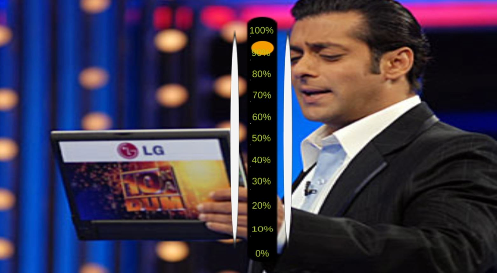
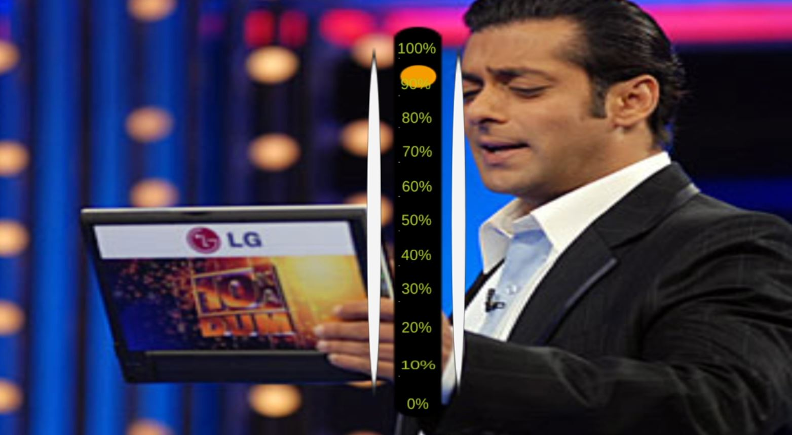

Fall Game
Survive falling obstacles and collect points in a physics-based challenge built with Unity.
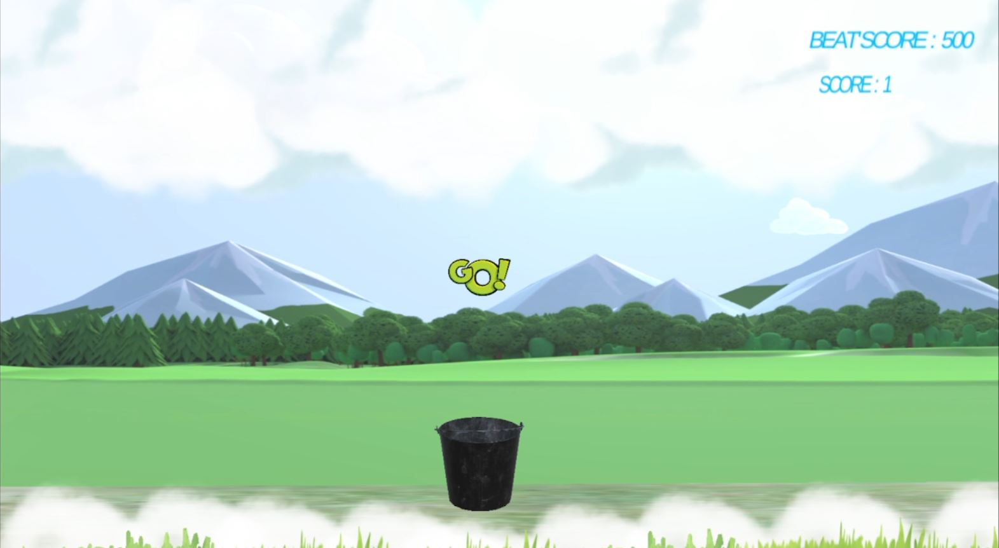


Fat Man Survive
An obstacle-avoidance survival game with dynamic enemies, checkpoints, and rewards.
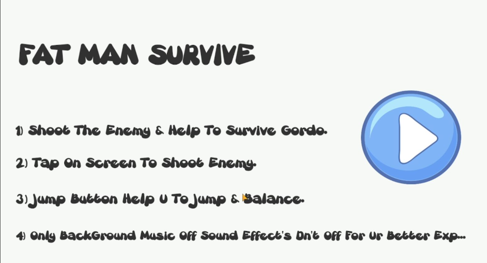


 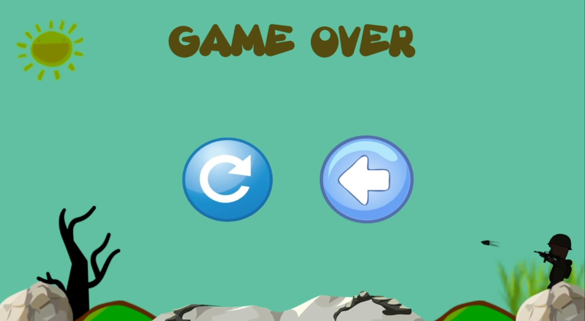
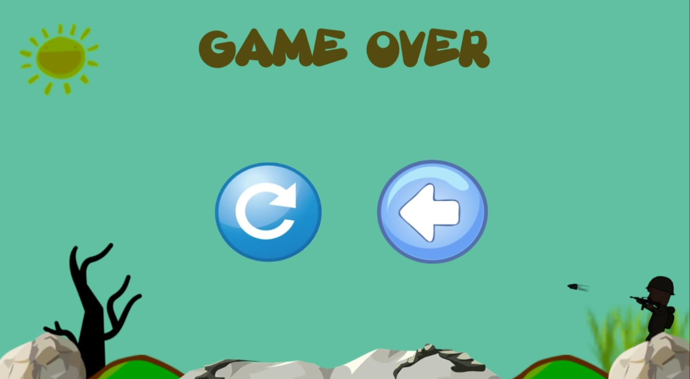
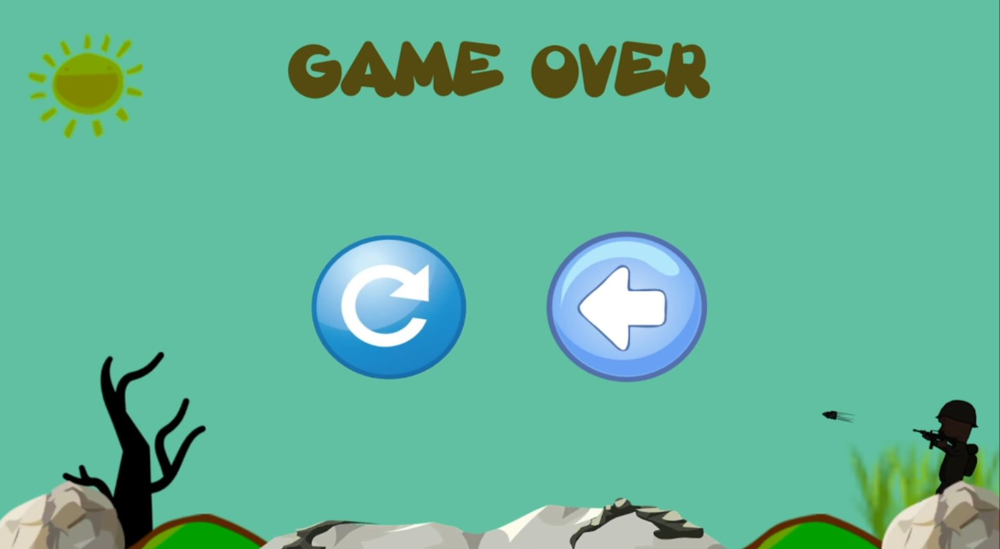
Finger Furry
A fast-paced reflex arcade where timing is key. Players tap to dodge traps and score high.
 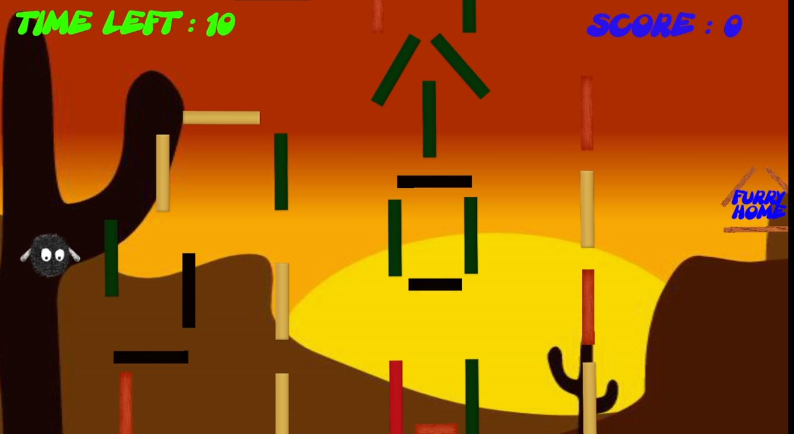
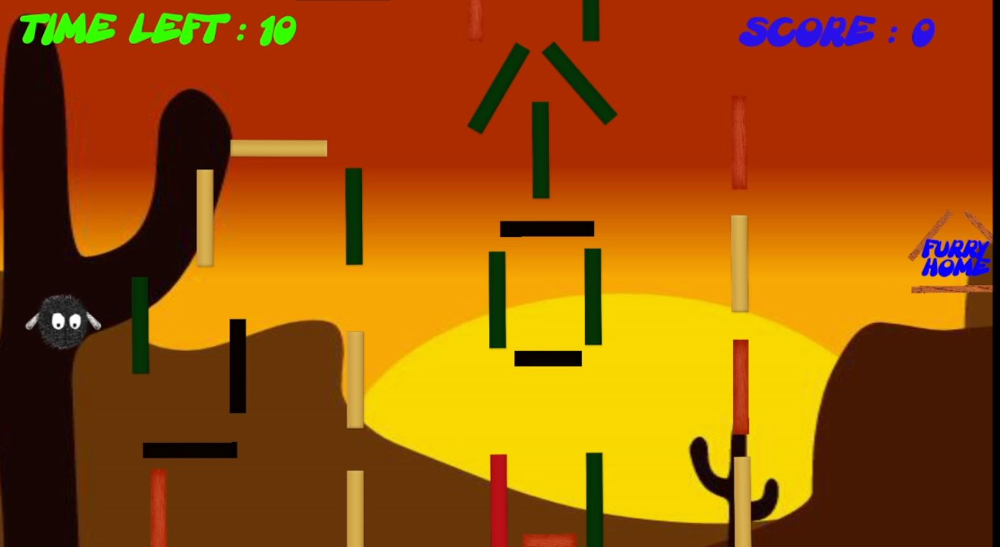
 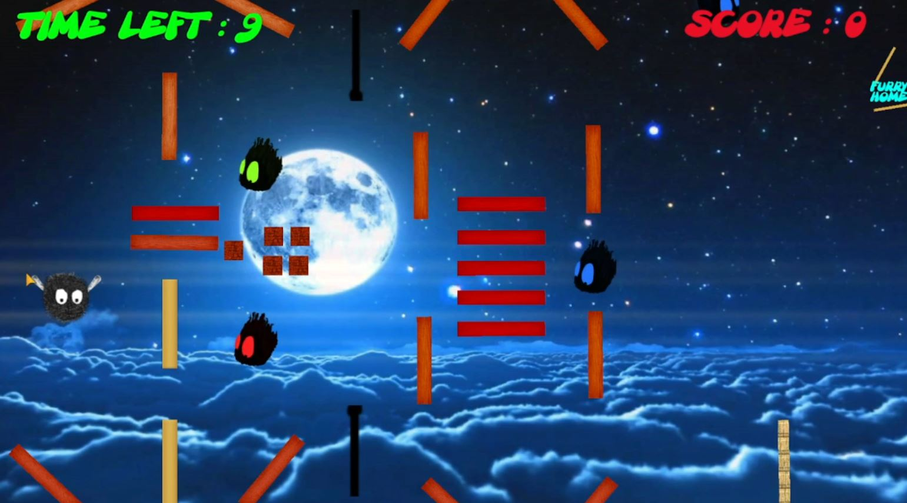
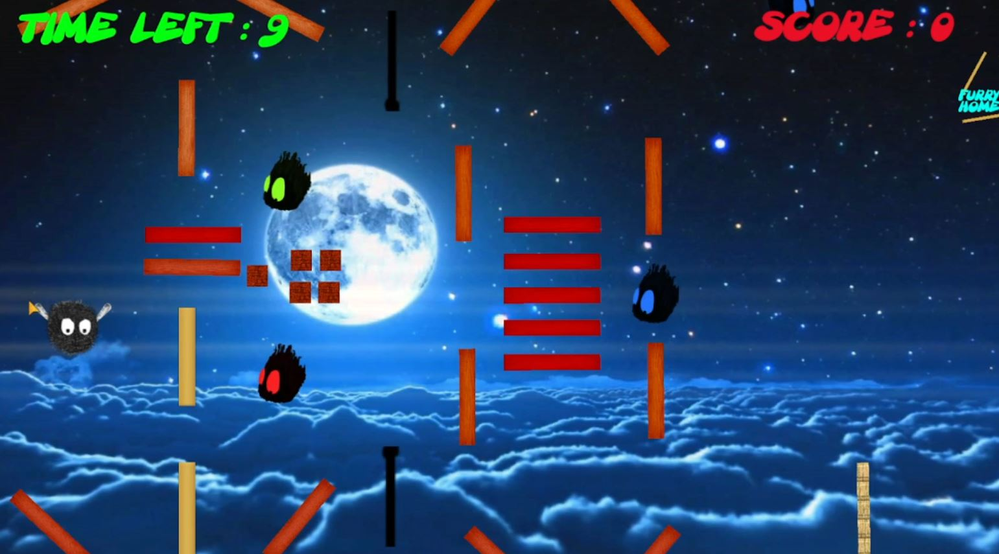